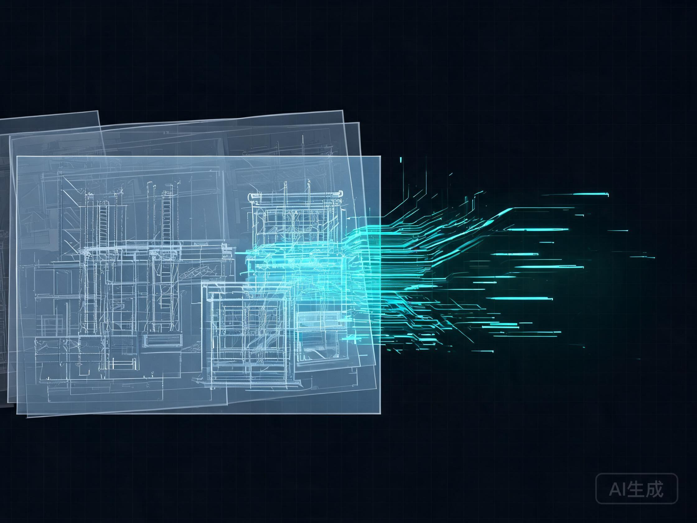

关于我
不是“转码”的土木生，
而是会用 AI 解决工程问题的建造者。
在兰州交通大学土木工程专业三年的学习中，我不仅掌握了结构力学、混凝土与钢结构设计，也自学了 Python、计算机视觉与全栈开发。
我相信土木工程的未来不是“被 AI 替代”，而是被 AI 放大：从图纸审查到参数化建模，从监测数据到风险预测，懂工程的人才是让算法落地的关键。
除了代码和图纸，我也喜欢摄影、音乐和樱花季里的慢节奏——这个主页就是它们共同的样子。
2022.09
入学兰州交通大学
土木工程本科专业，开始系统学习结构、材料与施工。
2023.06
自学编程与数据分析
Python、NumPy、Matplotlib，尝试把课程数据自动化处理。
2024.03
第一个 CV 审图项目
用 YOLO 做结构图纸构件检测，意识到工程 + AI 的交叉价值。
2025.03
BIM 语义搜索与主页重构
探索 IFC 向量检索，同时用新版个人主页沉淀学习与项目。
技能熟练度
Python / 数据分析
85%
计算机视觉 / OpenCV
75%
PyTorch / 深度学习
70%
结构分析与设计
85%
AutoCAD / BIM
80%
Web 前端 / 可视化
65%
土木工程
结构 / 材料
人工智能
CV / NLP
全栈开发
Web / 脚本
影像记录
建筑 / 城市
能力图谱
工程 + AI 的交叉技能
从物理世界的问题出发，用数据和算法寻找工程最优解。
结构分析与设计
结构力学、混凝土/钢结构、BIM 建模与施工图识读，能把图纸语言转化为计算问题。
AutoCAD
PKPM
Revit
计算机视觉审图
基于 YOLO / DETR 的结构图纸目标检测与标注，自动识别构件、尺寸与配筋信息。
Python
OpenCV
YOLO
BIM 语义搜索
将 IFC / 构件数据嵌入向量数据库，实现自然语言检索构件属性与图纸关联。
RAG
Vector DB
IFC
监测数据分析
处理位移、应力、振动等传感器数据，进行时序预测与异常检测，辅助结构安全评估。
Pandas
NumPy
时序模型
工程工具开发
Python / JS 自动化脚本、参数化建模工具、Web 可视化看板，让重复工作自动完成。
FastAPI
Tailwind
Rhino/Grasshopper
快速学习与协作
熟悉 Git、敏捷开发与技术写作，能把复杂方案用工程师和开发团队都懂的语言表达。
Git
Markdown
Figma
项目与实验
把土木问题，做成 AI 原型
既有面向工程场景的实战项目，也有探索技术的个人实验。
Gesture Galaxy
基于手势识别的交互式星系探索演示。用 MediaPipe 捕捉手部关键点，控制镜头在 3D 星云中漫游，锻炼实时交互与可视化能力。
ISS Radar
国际空间站轨道追踪面板。调用公开 API 获取实时 TLE 数据，用 Canvas 绘制轨道投影与地面站可见窗口，探索数据可视化。
影像墙
镜头里的结构与光
工程是理性的，但光影、城市与生活是感性的。点击照片可放大查看。
日常与灵感
樱花、音乐与慢节奏
代码和图纸之外，这里是充电和放空的地方。
正在循环
我的 2026 春季歌单
Sakura Days — Instrumental
1:18
3:42
- Sakura Days — Instrumental 3:42
- Concrete Dreams 4:05
- Late Night CAD 2:58
樱花季手记
2026.04 · 兰州 / 西安
“花瓣飘落的速度和结构变形的时程曲线一样，都需要耐心观察。建筑也一样——最好的作品往往藏在那些不被注意的细节里。”
每年春天都会去看樱花。工程让我学会理性拆解世界，而樱花提醒我要保留感性与耐心。设计与算法，最终都是为了让人生活得更好。
#樱花
#建筑摄影
#慢生活
#设计与算法
联系
一起造点有用的东西
如果你在找既懂工程又懂 AI 的伙伴，或者想聊聊结构、代码与创意，欢迎随时联系。我会尽快回复。